www.nbasil.com
This Excel-based running log enables you to track your running activity, including distance, pace, feel, and any notes. It utilizes formulas and macros (VBA - Visual Basic for Applications) to automate and organize your running data. I hope you find it helpful! Please contact me with suggestions for improvements.
Download Running Log 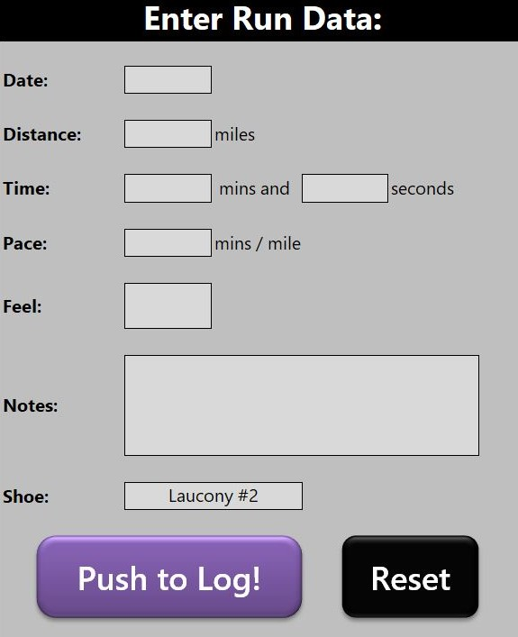 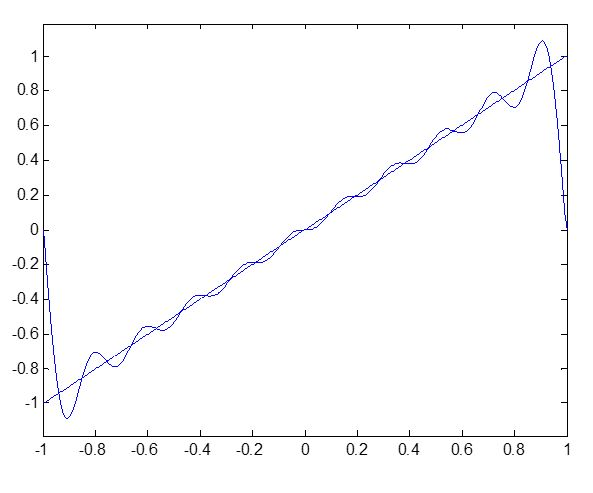
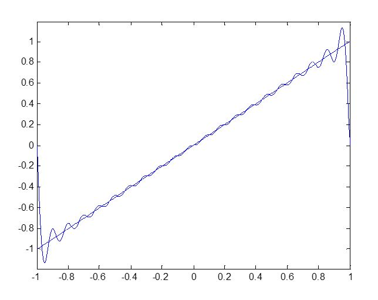
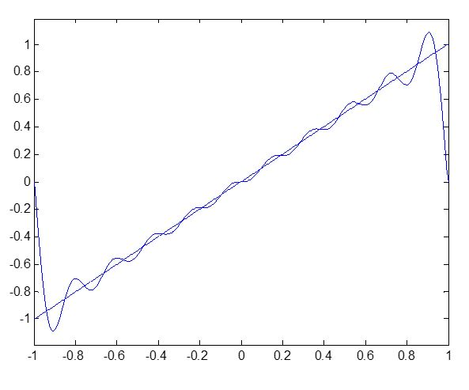
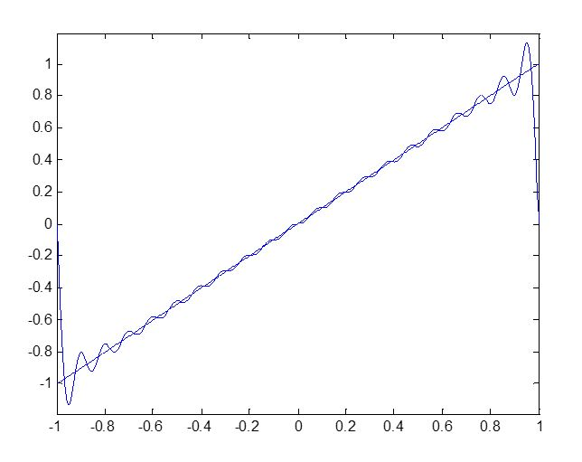
 Shock wave solution for an initial value problem: ut = u2ux=0, - ∞ < x < ∞ , t > 0 | u(x,0) = {2 if x ≤ 0, 1 if x > 0
Shock wave solution for an initial value problem: ut = u2ux=0, - ∞ < x < ∞ , t > 0 | u(x,0) = {2 if x ≤ 0, 1 if x > 0
 Unit sphere {x ∈ ℝ2| ||x|| = 1} corresponding to ∞ norm
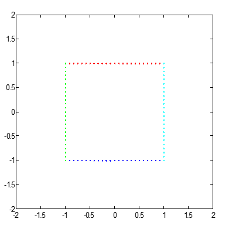
Ellipse
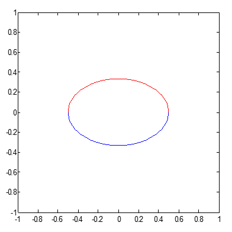
Unit sphere {x ∈ ℝ2| ||x|| = 1} corresponding to 1 norm
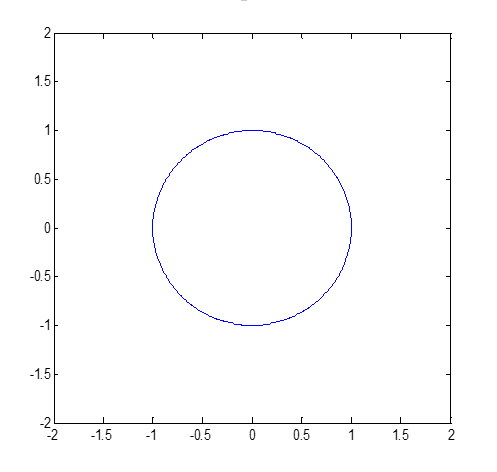
Scalar-transformed ellipses
Unit sphere {x ∈ ℝ2| ||x|| = 1} corresponding to ∞ norm
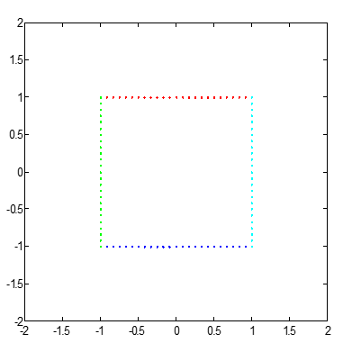
Ellipse
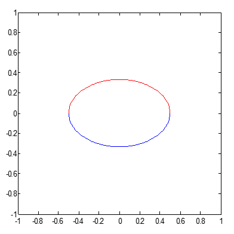
Unit sphere {x ∈ ℝ2| ||x|| = 1} corresponding to 1 norm
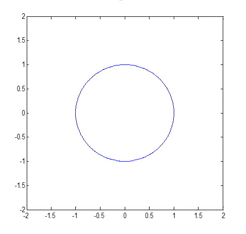
Scalar-transformed ellipses
 Unit circle, sine graph composite plot
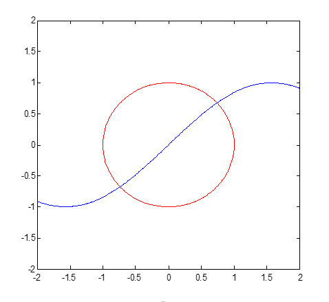
Matrix-transformed ellipses
Unit circle, sine graph composite plot
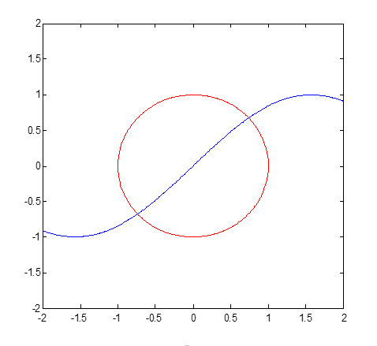
Matrix-transformed ellipses

Harmonograph: The device pictured below is made to mimic the motions of a pendulum-based harmonograph. A pen placed at the end of the arms enables really cool and complex geometric patterns to emerge.
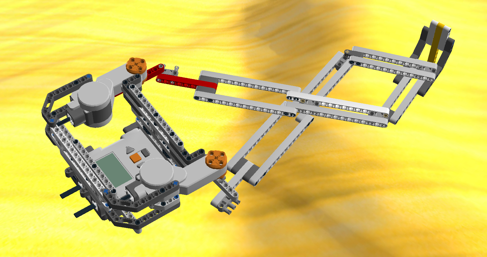